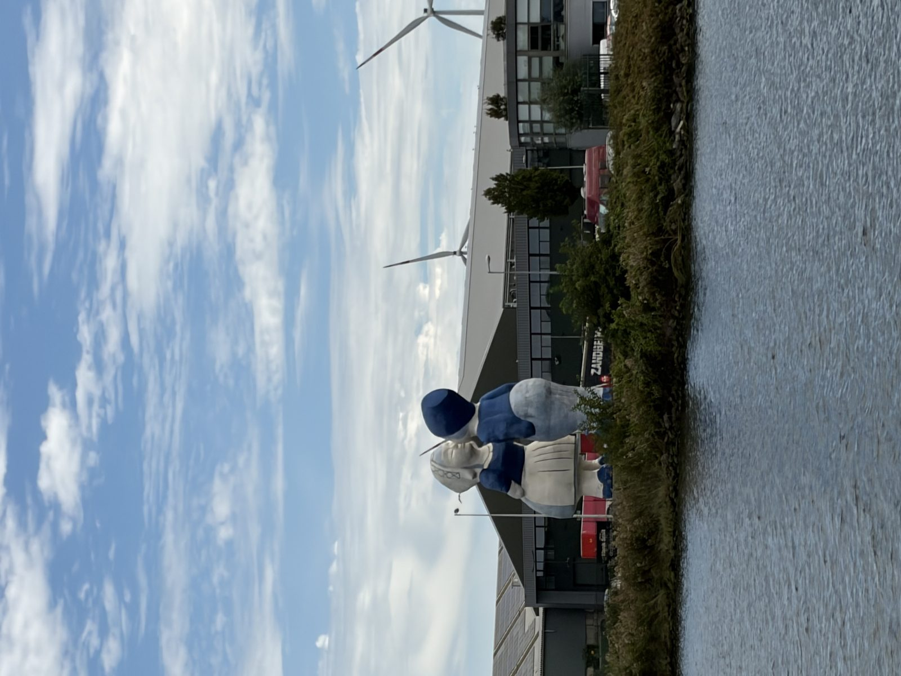
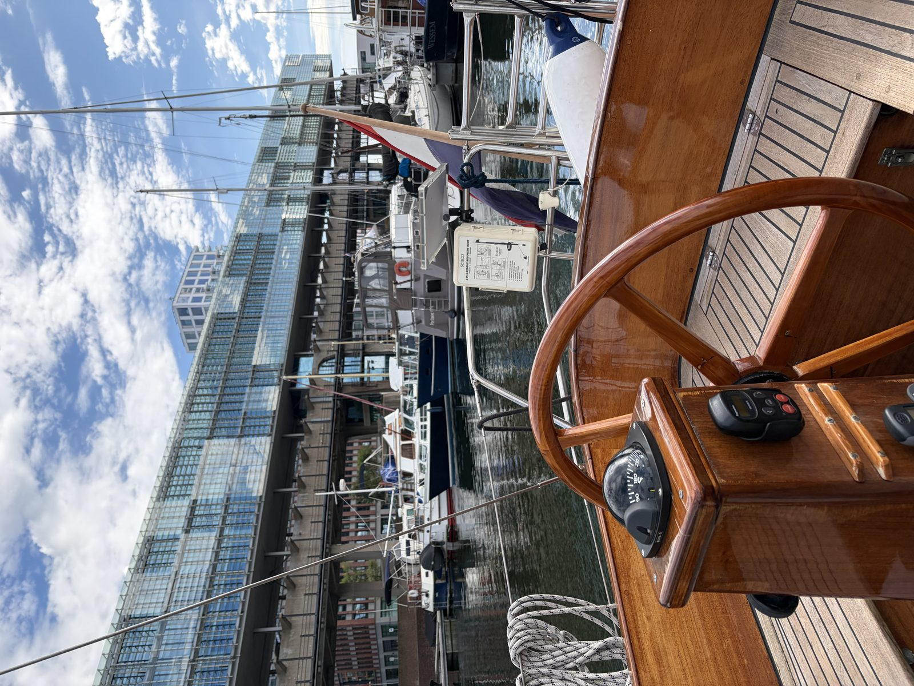

6 september 2026 · voorbereiding
Met de halfwinder naar Amsterdam
Vandaag van Scheveningen naar Amsterdam. Buiten stond een bakstagwind en met de halfwinder erop was het heerlijk zeilen langs de kust; een van de betere tochten van dit seizoen.
Bij IJmuiden kwamen we een bootje tegen met motorpech. We hebben het op sleeptouw genomen en veilig naar binnen gebracht.
Daarna door de sluis en over het Noordzeekanaal naar Amsterdam Marina, een leuke plek om te liggen.